Creative/Building
About this page:
In this page I am going to cover how I build in Minecraft creative mode by explaining the simple step by step process that I personally use to create decent well balanced builds.
Semi modern house:
Step one - Location:
An easy way to elevate your build's quality is to before you even start building to choose a good location to build at. This meadowy hilltop right next to the jungle took me less than five minutes to find, and my final build wouldn't look half good without it. I also chose a viewing position for making the examples and did build around that somewhat, so if you don't want as much work, you can design only one side of the building. Just like in real life the things around a building really impact how it feels, look for a place that suits what you have in mind.
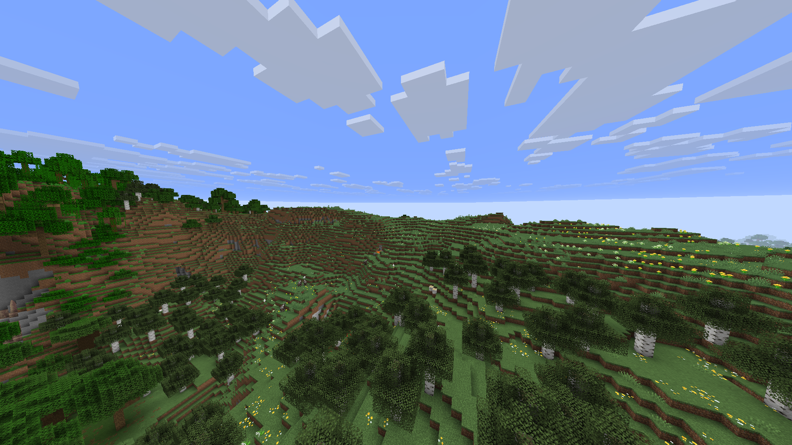
Step two - Outline:
The next step in my opinion is where you make the general shapes of your building. You can either make it out of some temporary block like wool or finalise your block palette and then start thinking about what you will make different parts out of. Because of my theme I decided on all of the bits of my outline are blocks but you can have curved bits for like a dome or triangle bits for some roofs and even things like holes in your outline. The most important part of the outline is that it looks good and has good shape. I like to think about the practical bits of the build about now like a balcony, but if your building like a statue or something, all you need to focus on in this step is the shape.
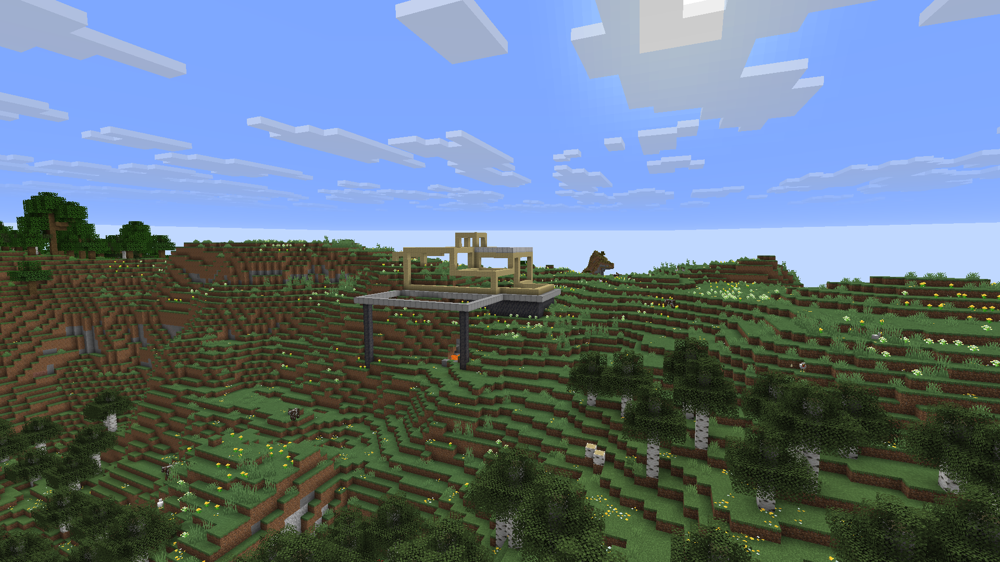
Step three - Filling:
By this step you should have your block pallets sorted. Block palettes are just like colour palettes if you were painting or something, so use complementary colours, triadic colours or monochromatic colours; choose warm or cool colours or both and use different shades of the same colours, and then convert the colour palette to blocks of those colours and consider texture (if it has spots or stripes) second and purpose (if it is like a crafting table) third. I chose a yellowish sequential colour palette because of the theme I am going for. Then I fill in the frame and adjust some things using motley solid blocks whilst thinking about patterns and multiblock texturing but not doing that yet.
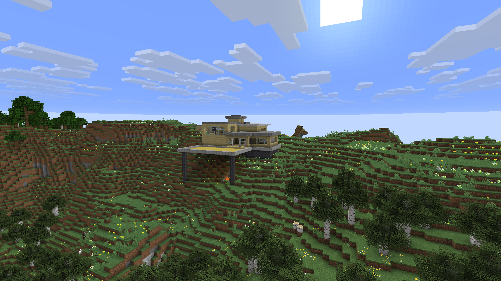
Step four - Texturing:
Now you do texturing. This step will really level up your builds, taking them from a bunch of flat surfaces to something more eye-catching. Rougher noise texturing and gradients are useful but hard to do, and patterns are easier. Checkboard patterns, alternating stripes and spirals are easy to come up with and difficult to mess up. You can think about shading when texturing, and I tried it under some of the overhangs, and it looks decent. Also whilst texturing, you can add big details like trees, doors, trapdoors, ladders and stairs as well as adding more subtle complexity to shapes by using stairs, walls, shelves and slabs.
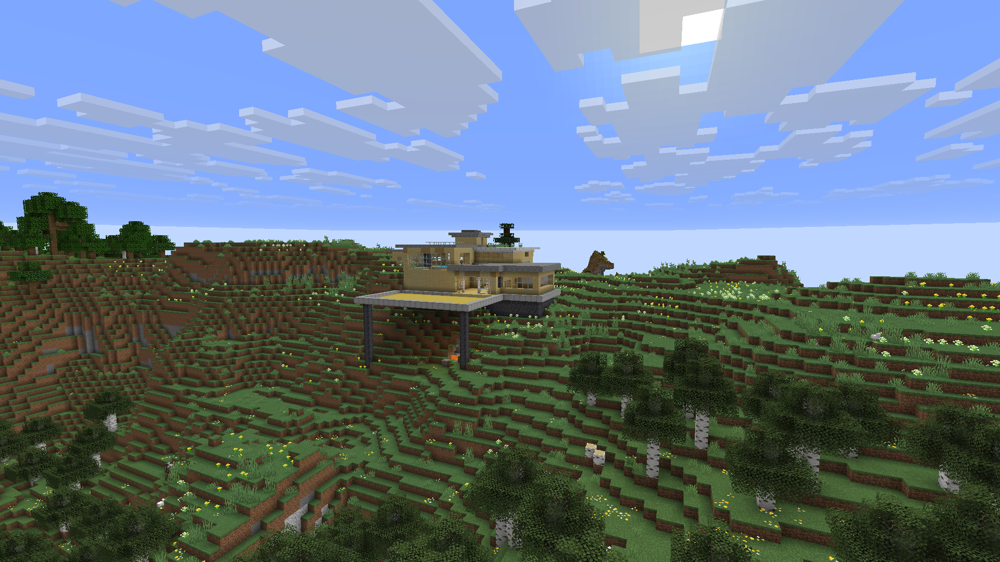
Step five - Details:
This is the last step. By now you will have a big, good-looking but not functional build. So you need to add stuff like furniture and flora. When making my furniture, I like to take inspiration from real-life furniture like chairs and tables which don't directly exist in Minecraft, so I have to use stairs and things for the shape, as well as things that do exist in Minecraft like furnaces and enchanting tables so it would work as a survival house. A neat trick for making grass and flowers and stuff is using bone meal on the grass, which automatically plants them.
Now you should be done. My house took about one and a half hours to make.
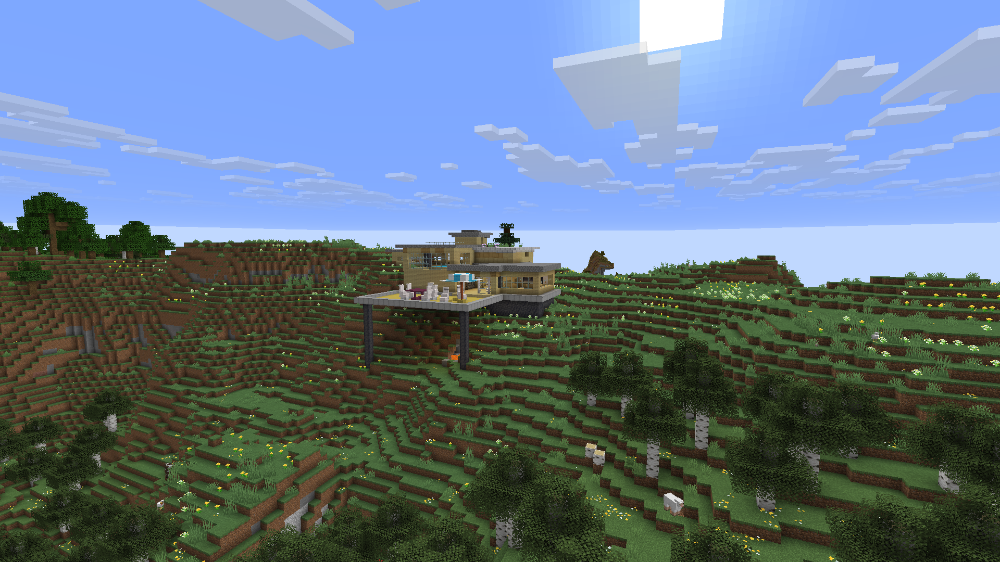
Some other photos of the build:
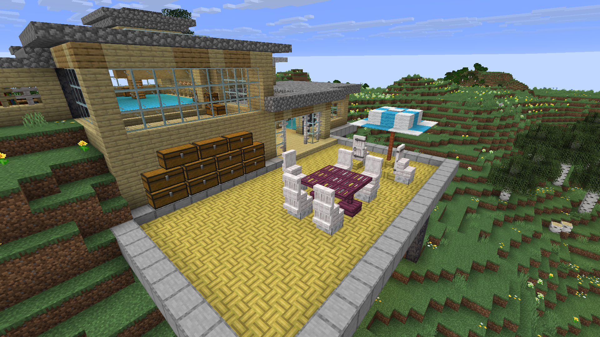
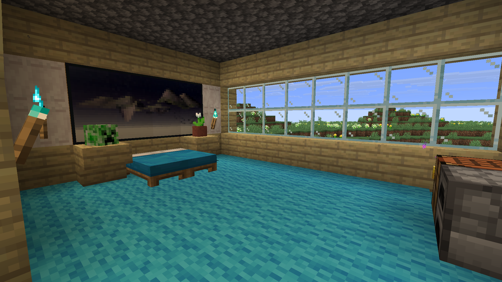
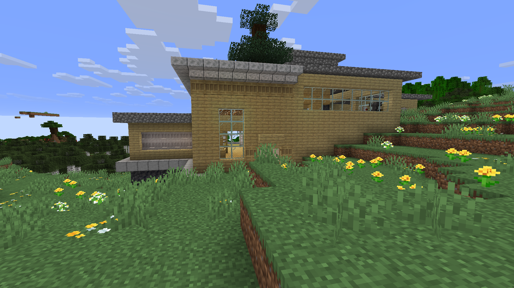
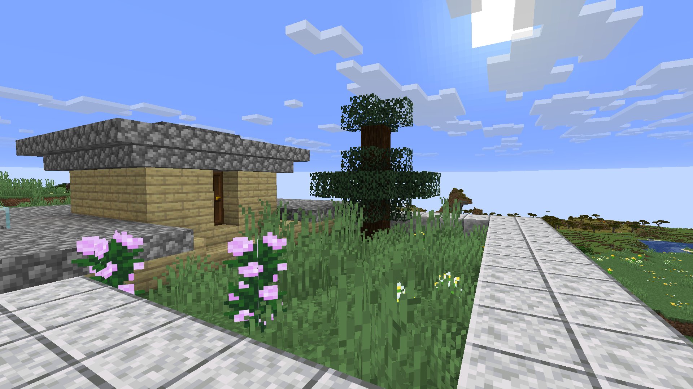
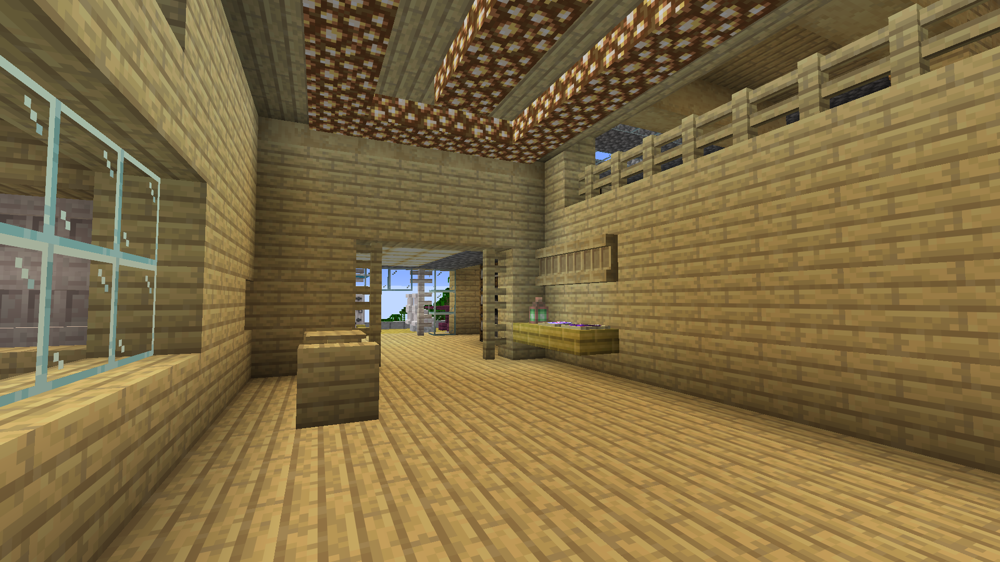
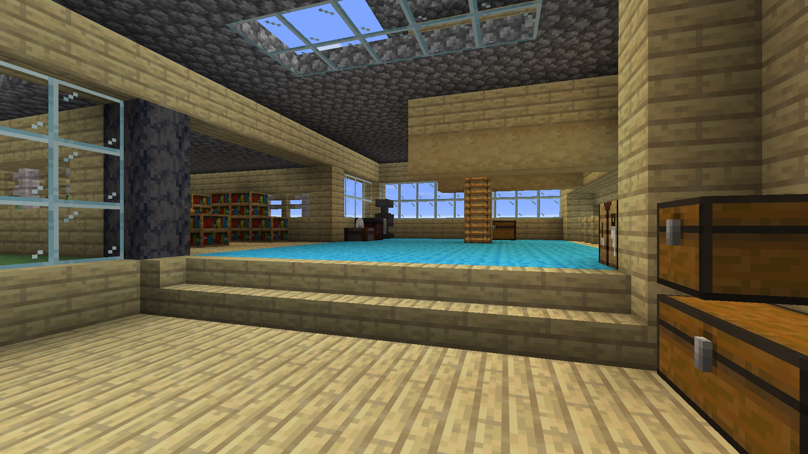